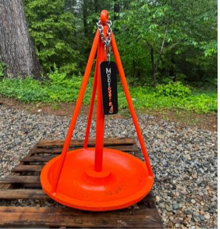

The bowl still beds in
The concave mushroom bowl works the way it always has — sinking into the mud and gaining suction over weeks of bedding-in. Holding power isn't compromised.
A traditional mooring anchor, redesigned with a conical bar geometry that physically prevents chain wrap. Same holding performance. No more 2 a.m. calls.
Every MoorSafe anchor is built around the same patent-pending conical geometry — only the weight changes to match your boat and your harbor's conditions. Talk with us about the right size for your mooring.
Sizing depends on boat displacement, scope, and exposure — get in touch and we'll walk through your specifics.
The MoorSafe anchor takes a standard cast-iron mushroom anchor and adds three symmetrically positioned bars that rise from the bowl to a single point above the stem. The result is a cone — and a cone has nowhere for chain to catch.
The concave mushroom bowl works the way it always has — sinking into the mud and gaining suction over weeks of bedding-in. Holding power isn't compromised.
Three symmetrical bars meet above the stem to form a cone. As tides and currents shift, the chain has nothing to catch on — it slides off the cone every time.
In testing, MoorSafe held to 40,657 lb of tensile force versus 38,560 lb for the traditional mushroom — a stronger anchor, not a tradeoff.

The MoorSafe anchor uses the same cast-iron base as a traditional mushroom anchor. The bars are added during fabrication and welded to spec.
Additional weights and configurations available on request. Contact us for the full spec sheet.
Request the spec sheetThe mushroom bowl is unchanged — it still sinks into mud and gains suction the same way it always has. The difference is geometric: we add three symmetrically positioned bars that rise from the bowl to a single point above the stem, forming a cone. The chain has nothing to wrap around because the cone has no edges to catch on.
No. In our 28-day field test in Casco Bay, the MoorSafe anchor was fully buried in mud while the traditional mushroom remained partially buried with its stem exposed. Breakout force was 1,295 lb for MoorSafe vs 1,575 lb for the traditional — comparable, with MoorSafe bedded deeper. In tensile testing at Yale Cordage, MoorSafe actually exceeded the traditional anchor's strength by about 5%.
We currently offer three weights: 300 lb, 400 lb, and 500 lb. The right size depends on your boat's displacement, the scope of your mooring, and how exposed your harbor is. Get in touch and we'll walk through the right choice for your situation.
The MoorSafe anchor is patent pending — we have a U.S. design patent application filed.
Maine, USA. The cast-iron base, the steel bars, the welding, the finishing, and the inspection all happen in Maine.
Installation is identical to a traditional mushroom anchor — same chain, same shackles, same scope, same setting practice. Most mooring service providers will be familiar with the process. We can recommend providers in your area; just get in touch.